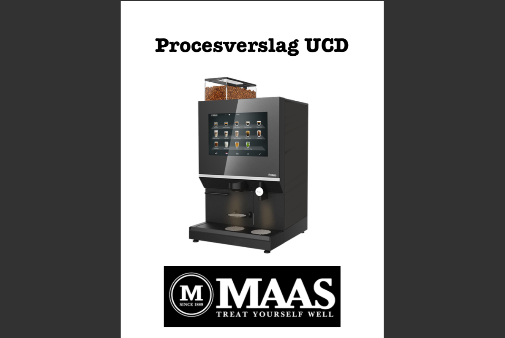

Procesverslag - UCD
Situatie
Dit was een opdracht voor het vak User Centered Design in leerjaar 1 CMD. De docent die ik hiervoor had was Jos Kok. De opdracht was om de gebruikerservaring van de koffiemachine te verbeteren. Je doet tijdens de opdracht gebruikersonderzoeken naar de doelgroep/ gebruikers.
Taak
Dit was een individuele opdracht dus ik werkte alleen. Ik moest alle methodes toepassen en daarna een poster maken om mijn concept te kunnen presenteren. Het was het eerste blok van het jaar dus alles was nog nieuw. Mijn doel was om alle methodes goed af te werken en om tot een goed concept te komen.
Activiteiten
We hebben methodes gebruikt om de context van het probleem, de wens van de gebruiker en doelstelling van de opdrachtgever te begrijpen. Ik heb bijvoorbeeld een Deep Hanging Out gedaan, een User Trip, schetsen gemaakt, een persona gemaakt, een URL gemaakt en nog veel meer.
Resultaat
Ik heb de opdracht gehaald. De docent was onder de indruk omdat het nog allemaal nieuw voor me was en ik het goed had gedaan. Het kon zeker nog beter, maar ik heb het vak met een 7 afgerond.
Reflectie
Dit was aan het begin van het eerste jaar van mijn studie en ik vond het nog heel erg wennen. Wel vond ik het meteen interessant hoe veel meer er komt kijken bij het maken of verbeteren van een product. Wat ik anders zou doen en ook heb gedaan daarna is het opstellen van het procesboek. Zodat het er overzichtelijker uitziet.